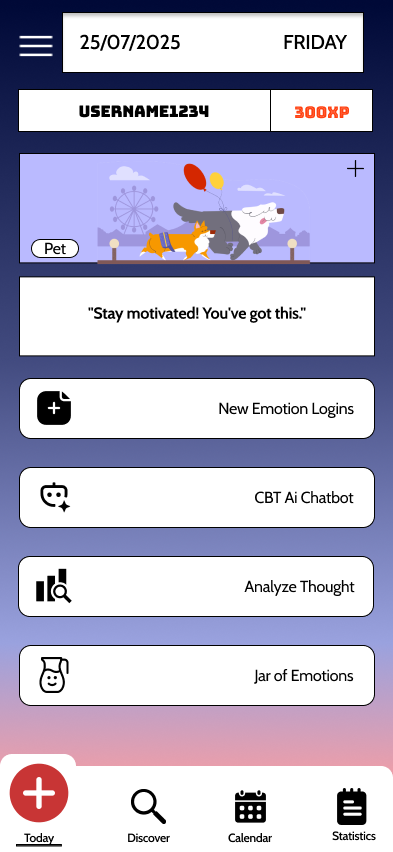
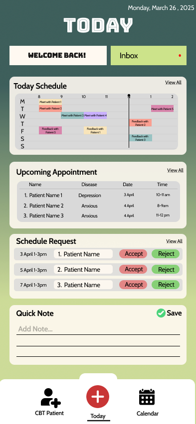

CBT Mental Health Mobile Application
A high-fidelity mobile prototype designed to bridge the gap between patients undergoing Cognitive Behavioral Therapy and clinical therapists. Built with a scalable design system for clearer handoff.
Figma
Auto Layout
Design System


